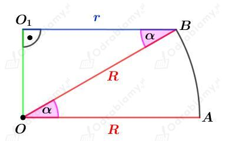
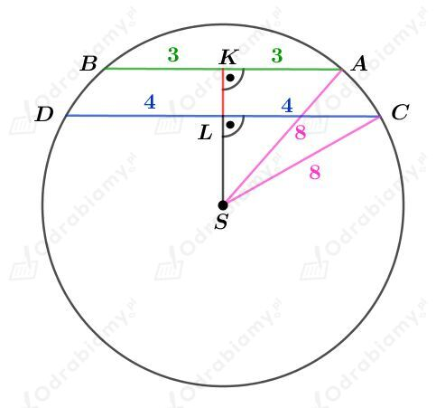
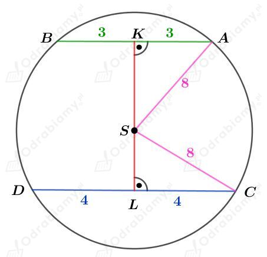
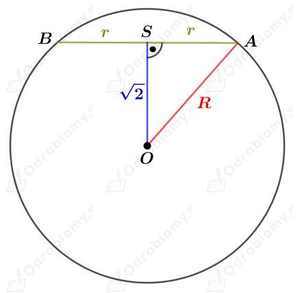
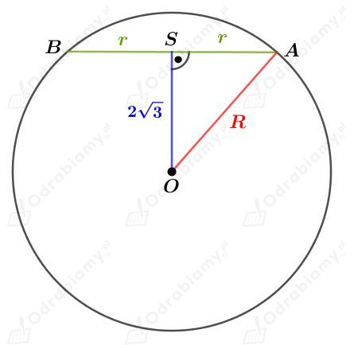
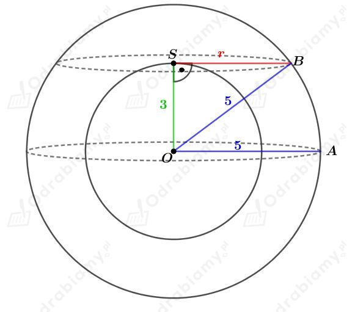
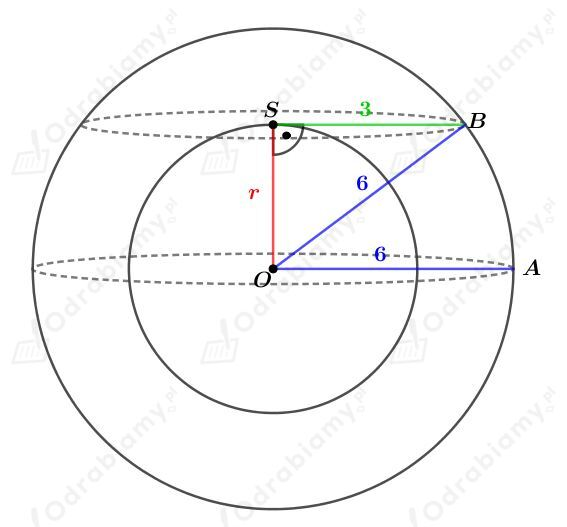
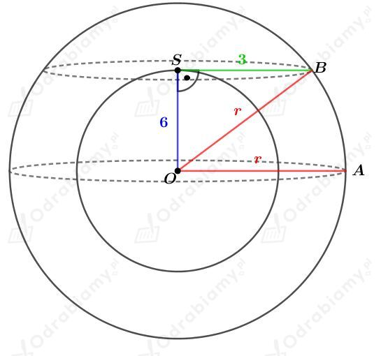

| Pole powierzchni kuli o promieniu r wyraża się wzorem: Objętość kuli o promieniu r wyraża się wzorem: |
Rysunek:

Kąty 𝛼 mają równe miary, gdyż są to kąty naprzemianległe.
a)
Wiedząc, że
otrzymujemy:
Wyznaczmy pole powierzchni tej kuli. Mamy:
Wyznaczmy objętość tej kuli. Mamy:
b)
Wiedząc, że
otrzymujemy
Korzystając z twierdzenia Pitagorasa dla trójkąta OBO1 otrzymujemy:
Wyznaczmy pole powierzchni tej kuli. Mamy:
Wyznaczmy objętość tej kuli. Mamy:
c)
Wiedząc, że
otrzymujemy:
Korzystając z twierdzenia Pitagorasa dla trójkąta OBO1 otrzymujemy:
Wyznaczmy pole powierzchni tej kuli. Mamy:
Wyznaczmy objętość tej kuli. Mamy:
Dana jest kula o promieniu długości 8 cm. Przecięto ją dwiema równoległymi płaszczyznami. W przekrojach otrzymano koła o promieniach 3 cm i 4 cm.
Przypadek I
Rysunek:

Korzystając z twierdzenia Pitagorasa dla trójkąta SLC mamy:
Korzystając z twierdzenia Pitagorasa dla trójkąta SKA mamy:
Wyznaczmy odległość między tymi płaszczyznami. Mamy:
Przypadek II
Rysunek:

Z przypadku I wiemy już, że
oraz
Wyznaczmy odległość między tymi płaszczyznami. Mamy:
| Pole powierzchni kuli o promieniu r wyraża się wzorem: Objętość kuli o promieniu r wyraża się wzorem: |
Dana jest kula o środku w punkcie O i promieniu długości R. Kulę przecięto płaszczyzną i w przekroju otrzymano koło o środku w punkcie S i promieniu długości r.
a)
Rysunek:

Wiedząc, że pole przekroju będącego kołem wynosi 25𝜋. Mamy zatem:
Korzystając z twierdzenia Pitagorasa dla trójkąta OAS mamy:
Wyznaczmy objętość tej kuli. Mamy:
b)
Rysunek:

Wiemy, że objętość tej kuli wynosi 108√3𝜋. Mamy zatem
Korzystając z twierdzenia Pitagorasa dla trójkąta OAS mamy:
Wyznaczmy pole przekroju będącego kołem. Mamy:
a)
Rysunek:

Punkt O jest wspólnym środkiem kul o promieniach długości 3 cm oraz 5 cm.
Koło o środku w punkcie S i promieniu długości r jest przekrojem utworzonym przez przecięcie większej kuli płaszczyzną styczną do mniejszej kuli.
Korzystając z twierdzenia Pitagorasa dla trójkąta OBS mamy:
Wyznaczmy pole otrzymanego przekroju. Mamy:
b)
Dane są dwie kule o wspólnym środku i promieniach długości 6 cm i r.
Pole przekroju (będącego kołem o promieniu długości x) utworzonego przez przecięcie większej kuli płaszczyzną styczną do mniejszą kuli jest równe 9𝜋 cm2, zatem mamy:
Przypadek I
Rysunek:

Korzystając z twierdzenia Pitagorasa dla trójkąta OBS mamy:
Przypadek II
Rysunek:

Korzystając z twierdzenia Pitagorasa dla trójkąta OBS mamy:
| Pole powierzchni kuli o promieniu r wyraża się wzorem: Objętość kuli o promieniu r wyraża się wzorem: |
a)
Kulisty balon ma promień długości 20 cm. Wyznaczmy pole jego powierzchni. Mamy:
Dopompowano powietrze do tego balonu. Jego promień zwiększył się o 25%. Wyznaczmy promień takiego balonu. Mamy:
Wyznaczmy pole jego powierzchni. Mamy:
Wyznaczmy, o ile wzrosło pole powierzchni balonu po dopompowaniu powietrza. Mamy:
Odp. Po dopompowaniu powietrza, pole powierzchni tego balonu wzrosło o 900𝜋 cm2.
b)
Dany jest balon o promieniu długości 20 cm. Wyznaczmy pole jego powierzchni. Mamy:
Z tego balonu spuszczono powietrze. Promień balonu zmniejszył się o 25%. Wyznaczmy promień takiego balonu. Mamy:
Wyznaczmy pole jego powierzchni. Mamy:
Wyznaczmy, o ile zmalało pole powierzchni balonu po dopompowaniu powietrza. Mamy:
Odp. Po spuszczeniu powietrza, pole powierzchni tego balonu zmalało o 700𝜋 cm2.
| Objętość kuli o promieniu r wyraża się wzorem: |
Dany jest stożek o promieniu podstawy długości r i wysokości długości r. Wyznaczmy objętość tego stożka. Mamy:
Dana jest półkula o promieniu długości r. Objętość tej półkuli jest równa połowie objętości kuli o promieniu długości r. Wyznaczmy objętość tej półkuli. Mamy:
Dany jest walec o promieniu podstawy długości r i wysokości długości r. Wyznaczmy objętość tego walca. Mamy:
Zbadajmy, czy liczby
są kolejnymi wyrazami ciągu arytmetycznego.
Zauważmy, że
oraz
Zatem objętości podanych brył są kolejnymi wyrazami ciągu arytmetycznego o różnicy równej 1/3𝜋r3.
co kończy dowód.